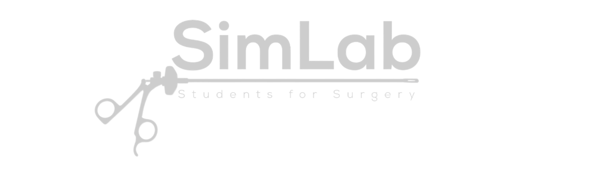

404
Seite nicht gefunden
Die angeforderte Seite existiert nicht oder wurde verschoben. Vielleicht hilft dir einer der folgenden Wege weiter.

Die angeforderte Seite existiert nicht oder wurde verschoben. Vielleicht hilft dir einer der folgenden Wege weiter.